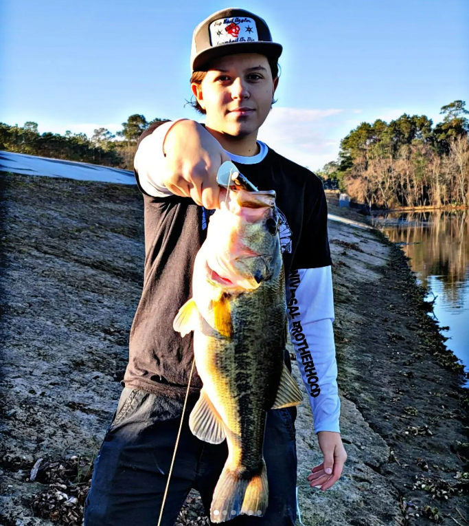
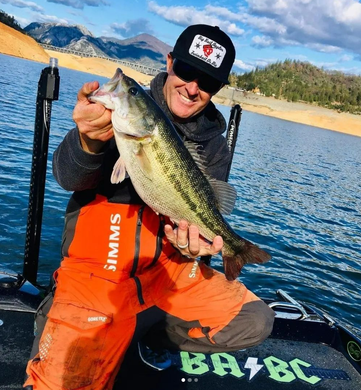
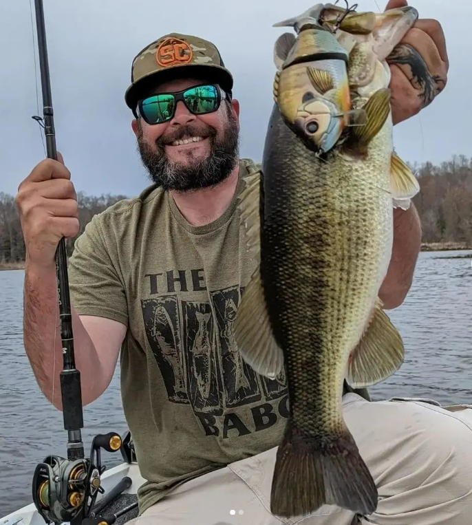
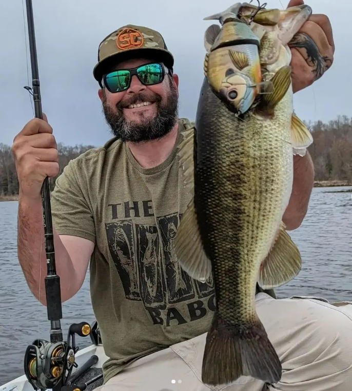
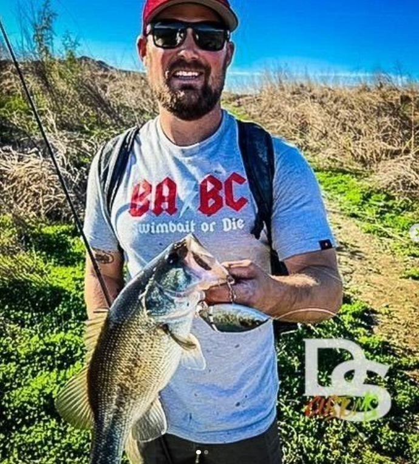
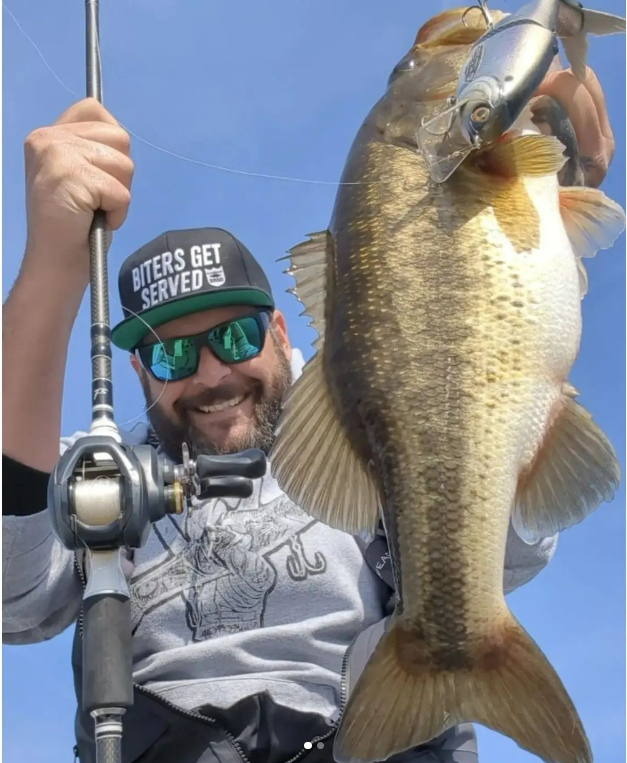

Overview
Purpose
To provide an easy way to sell fishing apparel and promote the company of the BABC
Audience
Those who have the neish to fish or just like the gear that we have.
Branding
Website Logo
Style Guide
Color Palette
Palette URL: https://coolors.co/396e94-e7c24f-a43312-381d2a-aabd8c| Primary | Secondary | Accent 1 | Accent 2 |
|---|---|---|---|
| rgb(219, 22, 22) | whitesmoke | [#a61300] | Black |
Typography
Heading Font: [squealer]
Paragraph Font: [cabin]
Normal paragraph example
Here's a sample text for a fishing page: Welcome to our fishing page, where we share tips, tricks, and stories about our favorite hobby. Fishing is not just a sport; it's a way of life for many of us. Whether you're a seasoned angler or just starting, we hope you'll find something useful and interesting here. We know that fishing can be a challenge, especially if you're new to it. That's why we're here to help you with everything from choosing the right equipment to finding the perfect spot. Our team of experienced fishermen has tried and tested many different techniques, baits, and lures, and we're always happy to share what we've learned. We believe that fishing is not just about catching fish, but also about enjoying nature, spending time with friends and family, and creating memories. That's why we'll also share stories and photos of our fishing trips, as well as recommendations for fishing destinations and lodges. We hope you'll find our fishing page informative, entertaining, and inspiring. Tight lines, and happy fishing!
Colored paragraph example
John had always dreamed of catching a trophy fish, and his chance finally came on a sunny afternoon at the lake. He baited his hook with a juicy worm and cast his line into the water, waiting patiently for a bite. Hours went by without any luck, and John was starting to lose hope. Just as he was about to give up and call it a day, he felt a sharp tug on his line. His heart raced as he reeled in the fish, which fought hard and put up a good fight. Finally, after what felt like an eternity, John caught a glimpse of his catch – a massive rainbow trout that glimmered in the sun. He carefully pulled the fish onto his boat, feeling a sense of pride and accomplishment. As he held the fish up for a photo, he couldn't help but smile. It was a moment he would never forget, and he knew that he would be telling the story of his epic catch for years to come.
Navigation
Site Map
Content
Home page
[Written copy for the home page here]
Images for the Home page
 [Page 2]
[Written copy for the Page 2 here]
Images for the Page 2
 

[Page 3]
[Written copy for the Page 3 here]
Images for the Page 3
  SWireframes
Create three wireframes for your site. One for each page and list them here
Home
[Any additional details about home that the wireframe does not make clear]
[Page 2]
[Any additional details about page 2 that the wireframe does not make clear]
[Page 3]
[Any additional details about page 3 that the wireframe does not make clear]